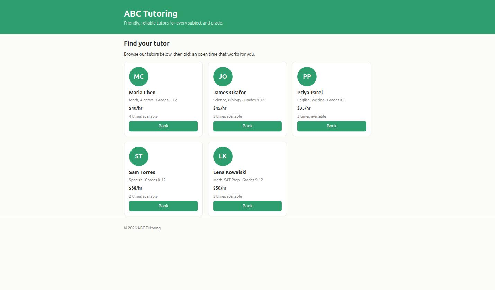
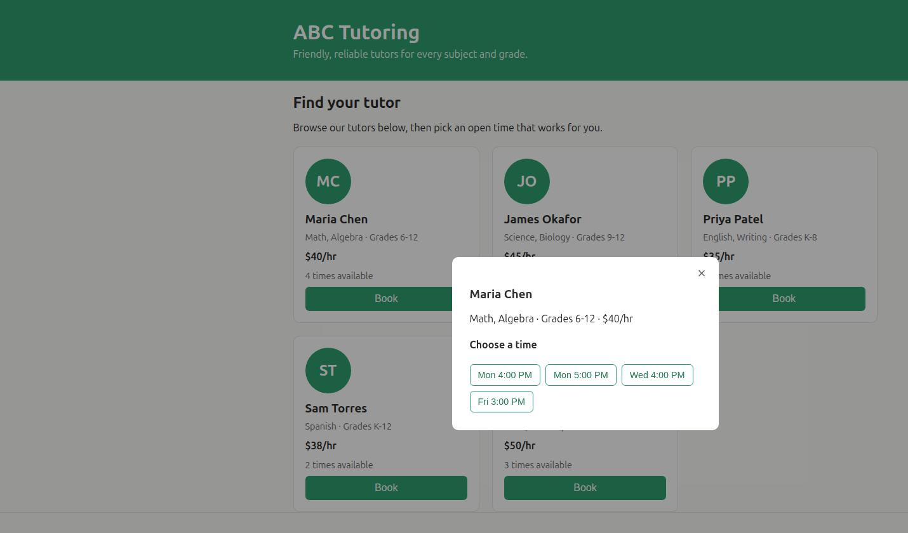
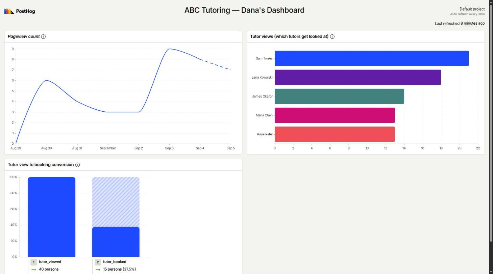

A working prototype for browsing tutors, booking sessions, and understanding what your visitors do — built from what you told us, with analytics baked in.

Parents browse all tutors — photo, subjects, rate, and how many times are still open.

Picking a tutor shows only their open times. Booking removes that slot instantly — no double-bookings.
Live dashboard, built around the two questions you asked: which tutors get looked at, and how many of those views become bookings.

This is a starting point — happy to adjust the look, add more tutors, or track anything else you're curious about once real visitors start using it.